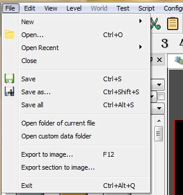
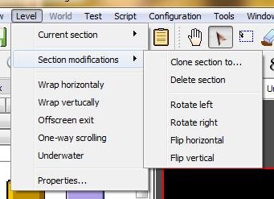
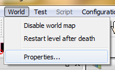
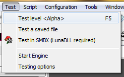
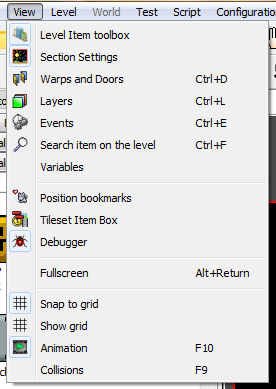
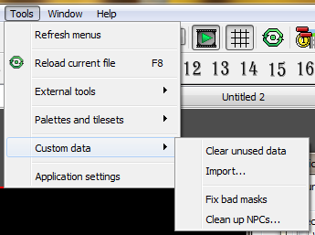
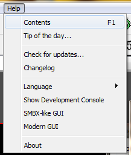

Create a new file.
Open file
Save current data into opened file. If file is created, will be asked for save file.
This option will save selected fragment of level or world map into image file (will be saved in PNG format).
This option will save whole level section into image file (will be saved in PNG format).

Undo - Cancel recent action.
Redo - Repeat canceled action.
Copy - Selected items will be stored in special buffer. Data can be pasted in other file.
Cut - Selected itemss will be stored in special buffer and deleted from working space.
Paste - Switch editing mode to "Paste". Cursor will be changed and you must select point of working space, for paste items from buffer.
Align each selected item to grid.
Rotate item's coordinates inside selection rectangle
Invert item's coordinates relative to selection rectangle

In this menu you can switch current section to other.
Clone section to... - giving able copy all items of selected sections with section settings and size into another section and into another file.
Delete section - removes all items of current section and de-initializing them.
Rotate left/right - will rotate coordinates rectangle of section with all items in them.
Flip horizontal/vertical - will invert coordinates of items in the section.
Connect left and right sides (Level Warp) - Moved out off screen items/characters will be entered from opposite side of section.
Offscreen exit - Allows to player exit from level by go out off screen.
One-way scrolling (No turn back) - Character can move only from left to right.
Underwater - Force underwater physics to full section area.
Here you can set the level title, what will be displayed on trying of level debug.

Disable world map - Enable the hub based episode mode. The world map will not be used.
Restart level after fail - Last level will be restarter after player's fail instead it will be kicked into world map or into last hub.
Properties - show/hide the world map properties toolbox.

Run testing - will run testing of current level. Will be available interprocessing.
Run testing of saved file - will start testing of saved file without interprocessing.
Settings - <comming soon>

Here you can show or hide exists toolboxes
Enabling displaying of main window in fullscreen mode. This feature is useful for tablets.
Enable or disable the aligning of items by grid.
Enable or disable item animations. This option will not be work, if on level map placed too many items.
You can disable this option for speed up.
Enable or disable collision detection on drop items. If collision was cased, moved item will return back to source position. For example: blocks can't be placed over other blocks, or NPCs can't be placed to other NPCs or over blocks, and BGO can't be palced over equal BGO, but difference BGO can be placed over.
You can disable this option for move items over each other without limits.
This feature will switch unmasking algorithms. If this flag enabled, will be used BitBlit AND->OR algorithm (same which used in the SMBX). If this flag will be disabled, will be used alpha-blending algorithm. This algorithm more faster and giving true transparency, but some lazily-made graphics will be rendered with bugs, and we recomend to fix all laziliy-made masks to take correct using of lazily-made graphics.

This option displaying the global configuration status window. You will see list of all loaded items and you can see all errors, what appeared in config loading process, what will help for find error in game config files.
Reloading of global configuration
This option start to completely reload of all global configuration data without restart of editor.
This option giving able to switch into another config pack
This option will reset menubar options. This option will help, if toolbars are inactive.
Current file will be reloaded with his data, as custom grahics.
Contains the GUIs and links to additional tools.
Create and edit the global tilesets configuration for current game config.
Clear unused data - will remove custom files which are never using with PGE and SMBX.
Import - giving able to apply pack of custom data directly into level/world directlry.
Fix wrong masks - will fix all wrongly made masks. Use it when you have problems with rendering of graphics.
This action will be open the application settings
window, where you can change animation item limits, set autoplay music, etc.
Here you can define logging properties, set log file or disable logging.
Here displaying all opened documents. You can switch to any, you can arrage the, or close.

This menu contains the links to help information and links to special tools.
This is a special tool which displaying everything information which appearing while editor process is going.
Also this console allow to send special commands to the engine part while debug test is runned.
This menuitem will switch editor's GUI into classic design with sub-windows mode and with tileset itembox.
Copyright © 2014-2015 Platformer Game Engine by Wohlstand project. All rights reserved.